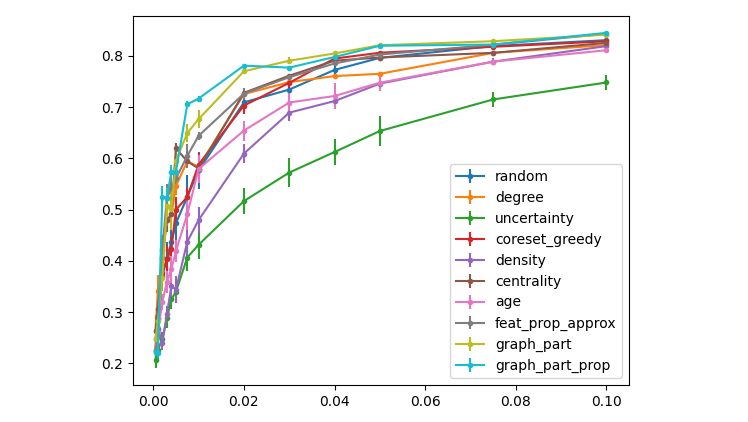
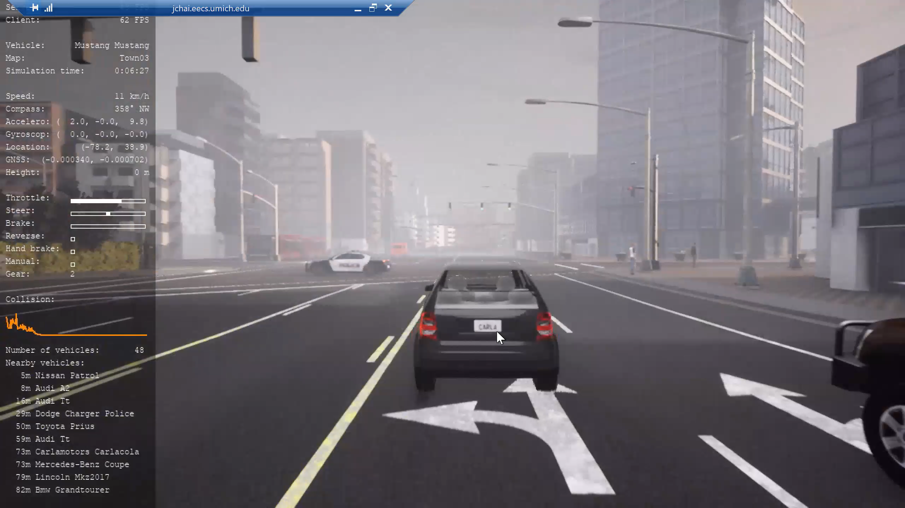
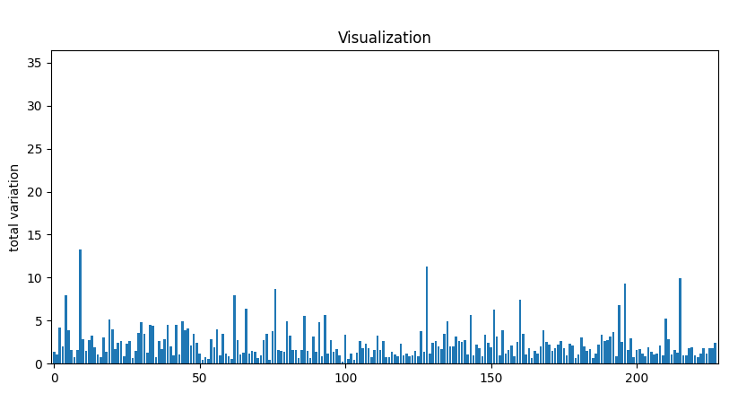
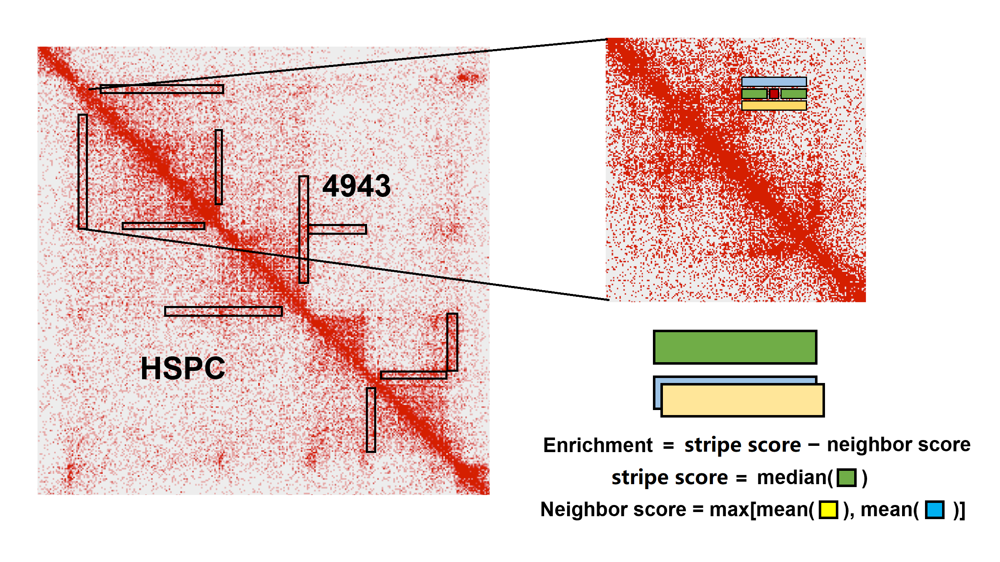

Here is my full portfolio.
2020

Towards More Knowledgeable Reasoning: Experiments on Natural Language Inference (Course)
[report][code]
- Final project of EECS 595: Natural Language Processing. Instructed by Professor Joyce Chai.
- Exploited external knowledge to perform NLI tasks including Question Answering, Conversation Entailment and Plausible Inference.
- Experimented on different finetuning strategies and utilized knowledge graphs for GCN-based reasoning.
Scalable and Diverse Neural Style Transfer with Generative Adversarial Networks (Course)
[report][slides][code]
- Final project of EECS 442: Computer Vision. Instructed by Professor Andrew Owens.
- Reproduced CycleGAN, StarGAN v1 and v2 for unpaired image translation.
- Evaluated them quantitatively on neural style transfer tasks with FID score.

GNN Prediction Interpretation: Spatial Cell Patterns of T2D Islets (Research)
[code]
- Instructed by Professor Jie Liu and Marcela Brissova.
- Redesign the GNN Explainer to perform label-wise explanation, validate the model on T2D islet samples and extract predictive spatial patterns.
- Actively on-going...

Active learning on Graph Neural Network via Hierarchical Graph Partitioning (Research)
[code: upon request]
- Instructed by Professor Qiaozhu Mei.
- A practical active learning query strategy on Graph Neural Networks.
- In preparation of publication...

Exception Handling in Autonomous Vehicles via Human Language Communication (Research)
[slides]
- Instructed by Professor Joyce Chai.
- Develop a smart interface that takes human interaction by language instructions and handle the exceptions in autonomous vehicles.
- Actively on-going...

Correlational Information Utilization in Spatial Temporal GCN on Traffic Data(Research)
[code: synthetic][code: validation]
- Instructed by Professor Qiaozhu Mei.
- Confirm the incapability of GNNs to capture correlational information by synthetic simulation.
- Validate lower training loss of ST‐GCN on traffic data with gaussian copula loss.
- This work is later developed into CopulaGNN, currently in preprint.

TAD Level Architectural Feature Extraction Caller (Research)
[slides][code]
- Instructed by Professor Jie Liu and Xiaotian Zhang.
- Extract TAD level architectural stripes from HiC, evaluate the quality and compare between cell lines.
- Todo: Paper write-up in late December.
Tissue Specific HiC De-convolution with ATAC-seq Input (Research)
[code]
- Instructed by Professor Jie Liu.
- Deconvolute the islet tissue specific HiC into single cell HiC specific to alpha and beta cells, and validate the results on synthetic and real dataset.
- Todo: extend the algorithm to minority cell types like delta cells.
Instagram MINI (Course)
[description][code: upon request]
- Project of EECS485, Web Systems. Instructed by Professor Andrew DeOrio
- A cloned client-side dynamic Instagram.
2019
Curvature Flow (Course)
[report]
[code]
- Instructed by Professor Shravan Veerapaneni.
- Project of MATH371, Numerical Analysis.
- Apply Euler Method to de-noise a predefined initial 2D-curve surface and obtain a smoothed curve.
Police Shooting Cases Analysis (Course)
[report]
[code]
- Instructed by Professor Horst Hohberger.
- Project of VE401, Statistics and Probability.
- Model the the number of mass shootings and make prediction for cases in 2019 based on the data for 2015 to 2018.
Food Package Content Analysis (Course)
[report]
[code]
- Instructed by Professor Horst Hohberger.
- Project of VE401, Statistics and Probability.
- Investigate the metrological testing for net quantities of products in prepackages with fixed content, issued by Chinese government in 2005.
2018
Glove Band (Course)
[report]
- Instructed by Professor Yanfeng Shen.
- Final Project of VG100, Intro to Engineering.
- A pair of multi-instrumental MIDI-controlling gloves.
Glove Band (Course)
[report]
- Instructed by Professor Yanfeng Shen.
- Mid Project of VG100, Intro to Engineering. Rank #2.
- A bridge-crane system.
Optical Caustic Analysis (Course)
[report]
[code]
- Instructed by Professor Horst Hohberger.
- Project of VV285, Honors Mathematics. Rank #1.
- Model the optical phenomenon of caustic in the coffee cup and perform simulations.
Feedback
You are welcome to drop me a message :)
-
Phone
734-545-9094
-
marstin0607
-
1137610417
-
Address
1875 Lake Lila Ln.
Ann Arbor, MI 48105
United States
{kind=link}
{kind=link}
{kind=link}
{kind=link}
{kind=link}
{kind=link}
{kind=link}
{kind=link}
{kind=link}
{kind=link}
{kind=link}
{kind=link}
{kind=link}